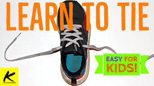

How to Tie your shoes
This project will focus on how to tie running shoes as opposed to boots or other types of fancy shoes.
Items need:
1. Yours hands
2. A pair of running shoes
Click here to follow the next steps on how to tie your shoe, while reading the description below!

Instructions (5 basic steps to tie your shoes)
- Step 1 Unknot Shoelaces: Make sure the two ends of the shoelace are completely untangled and free of knots.
- Step 2 Create Overhand Knot: Start by forming an overhand knot with the two ends of the shoelace. This is done by crossing one end of the lace over the other and wrapping it once around the other end.
- Step 3 Finish the Basic Shoe Knot: Form a loop with one end of the shoelace by bringing the middle of the loose segment to the base of the overhead knot.
- Step 4 Create Double Knot: To ensure that your shoelace does not come undone, making a second overhand knot with the loops created in the previous step is highly recommended.
- Step 5 Complete!: Good job! you have now learned how to tie your shoes!Feel free to look back at the tutorial if you need to go over something again.